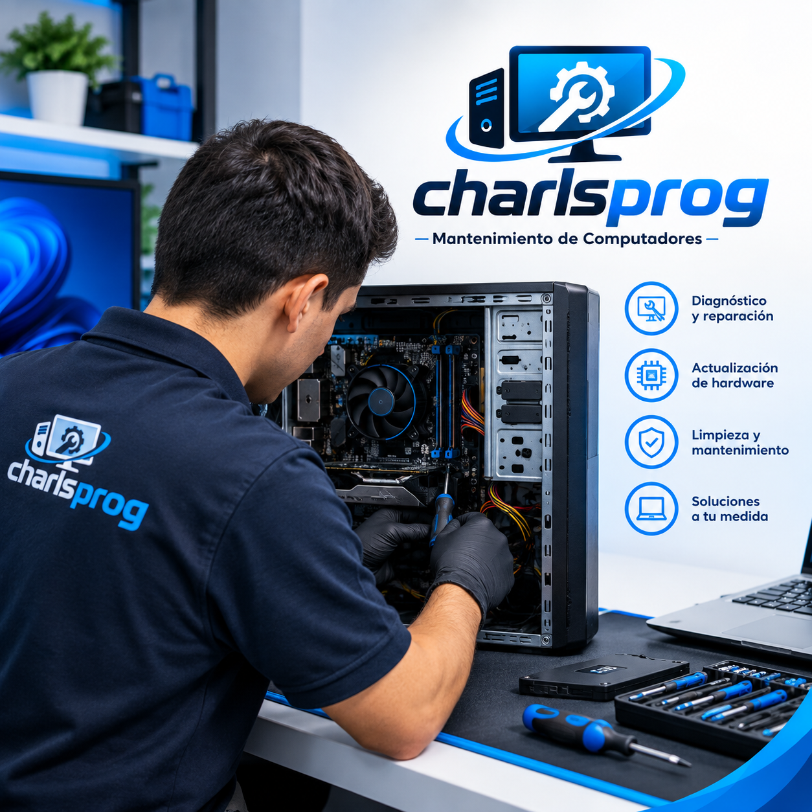

Mantenimiento Preventivo y Correctivo de Cómputo
Optimiza el rendimiento de tu equipo de escritorio o laptop con nuestros servicios especializados de limpieza, diagnóstico y actualización de componentes.

¿Por qué darle mantenimiento a tu equipo?
El polvo acumulado y la falta de cambio de pasta térmica son los enemigos silenciosos de cualquier computadora o laptop. Causan sobrecalentamiento, lentitud drástica y fallas permanentes en componentes críticos como el procesador (CPU) o la tarjeta gráfica (GPU). Realizar un mantenimiento periódico no es un gasto, sino una inversión para proteger tu herramienta de trabajo o entretenimiento.
1. Los riesgos de ignorar el mantenimiento
El polvo como aislante térmico y conductor: El polvo actúa como una cobija que atrapa el calor e impide que los ventiladores expulsen el aire caliente. Además, si hay humedad en el ambiente, el polvo apelmazado puede conducir electricidad y generar cortocircuitos en la placa base. Degradación de la pasta térmica: La pasta térmica transfiere el calor del procesador hacia el disipador. Con el tiempo (entre 1 y 2 años), se seca y pierde sus propiedades. Sin ella, las temperaturas se disparan en segundos. "Thermal Throttling" (Frenado térmico): Cuando los componentes superan los 85-90 °C, el sistema reduce automáticamente su rendimiento para no quemarse. Esto provoca congelamientos, tirones en juegos (stuttering) y extrema lentitud. Daño físico irreversible: El calor extremo prolongado degrada las soldaduras de la tarjeta madre y de la GPU, lo que puede dejar el equipo completamente inservible.